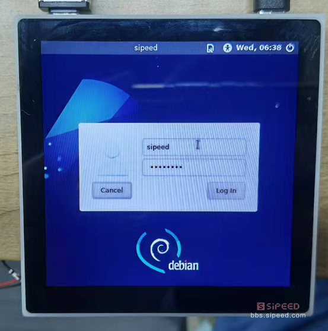
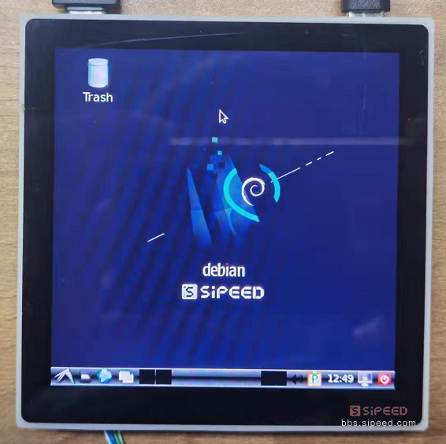
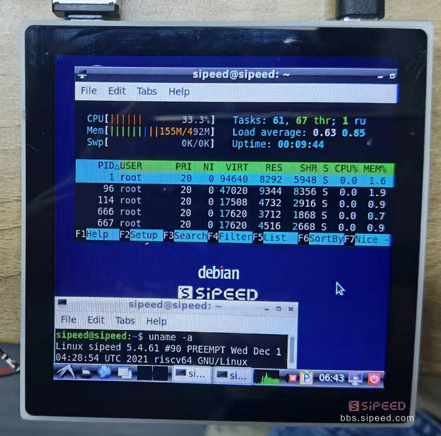

基础上手
点灯教程
当我们成功进入系统后，就可以进行基础的点灯操作啦！
（注：该教程不适用于 86-panel，因为对应引脚连接了外设，86-panel 用户可以拆下核心板来操作实验）
核心板的螺丝固定焊盘旁有一颗 LED ，查看原理图：https://dl.sipeed.com/shareURL/LICHEE/D1/HDK/Lichee_RV/2_Schematic
可知该 LED 连接的是 PC1，换算该 IO 的数字标号为：2*32+1=65，或者查看 IO 复用情况表：
cat /sys/kernel/debug/pinctrl/2000000.pinctrl/pinmux-pins
...
pin 64 (PC0): device 2008000.ledc function ledc group PC0
pin 65 (PC1): UNCLAIMED
pin 66 (PC2): UNCLAIMED
pin 67 (PC3): UNCLAIMED
pin 68 (PC4): UNCLAIMED
pin 69 (PC5): UNCLAIMED
pin 70 (PC6): UNCLAIMED
pin 71 (PC7): UNCLAIMED
我们先导出该 GPIO：
echo 65 > /sys/class/gpio/export
cd /sys/class/gpio/gpio65
然后再将该 IO 置为输出状态，即可操作其电平：
echo out>direction
echo 1 > value #LED点亮
echo 0 > value #LED熄灭
至此我们就成功在 RISC-V 64 D1上点灯啦~
你也可以对 串行RGB LED WS2812 进行花式点灯：
cd /sys/class/leds/
echo 255 > /sys/class/leds/sunxi_led0r/brightness;echo 0 > /sys/class/leds/sunxi_led0g/brightness;echo 0 > /sys/class/leds/sunxi_led0b/brightness;
echo 0 > /sys/class/leds/sunxi_led0r/brightness;echo 255 > /sys/class/leds/sunxi_led0g/brightness;echo 0 > /sys/class/leds/sunxi_led0b/brightness;
echo 0 > /sys/class/leds/sunxi_led0r/brightness;echo 0 > /sys/class/leds/sunxi_led0g/brightness;echo 255 > /sys/class/leds/sunxi_led0b/brightness;
外设功能验证
注意！！！
目前在 debian 系统下，蓝牙暂时不可以用！！
音频功能
录音设备查看
root@MaixLinux:~# arecord -l
**** List of CAPTURE Hardware Devices ****
card 0: audiocodec [audiocodec], device 0: SUNXI-CODEC 2030000.codec-0 []
Subdevices: 1/1
Subdevice 0: subdevice 0
card 1: snddmic [snddmic], device 0: 2031000.dmic-dmic-hifi dmic-hifi-0 []
Subdevices: 1/1
Subdevice 0: subdevice 0
card 2: sndhdmi [sndhdmi], device 0: 2034000.daudio-audiohdmi-dai 20340a4.hdmiaudio-0 []
Subdevices: 1/1
Subdevice 0: subdevice 0
播放设备查看
root@MaixLinux:~# aplay -l
**** List of PLAYBACK Hardware Devices ****
card 0: audiocodec [audiocodec], device 0: SUNXI-CODEC 2030000.codec-0 []
Subdevices: 1/1
Subdevice 0: subdevice 0
card 2: sndhdmi [sndhdmi], device 0: 2034000.daudio-audiohdmi-dai 20340a4.hdmiaudio-0 []
Subdevices: 1/1
Subdevice 0: subdevice 0
录放音测试：
arecord -D hw:1,0 -f S16_LE -t wav -d 3 t.wav
aplay -D hw:0,0 t.wav
另外可以使用alsamixer 进行音量调整
USB功能
默认内核支持外挂U盘的驱动，插上U盘后可以使用 fdisk -l 查看到新增的 /dev/sda
如果U盘没有被格式化，可以使用mkfs.vfat指令来格式化U盘，再使用mount指令挂载
默认Tina固件里的 /dev/mmcblk0p8 分区即可使用上述方式格式化后挂载，来提升可用空间
有线网络
LicheeRV-86 Panel 支持百兆网络，使用套餐附送的网线尾线接上网线后，执行以下指令来连接有线网络
ifconfig eth0 up
udhcpc -ieth0
无线网络
使用 Tina 系统
LicheeRV 底板默认使用XR829或者RTL8723BS wifi模块，可以使用以下指令进行联网操作先配置热点信息：
vim /etc/wifi/wpa_supplicant.conf network={ ssid="WiFi_name" psk="WiFi_password" }配置完成后重启，ifconfig wlan0 up; udhcpc -iwlan0 即可连上对应的wifi。连上网络后，你就可以使用ssh远程登录板卡，或者使用scp来进行文件传输啦~
使用 debian 系统
点击系统菜单--Preferenes--Connman Settings，打开 Network Settings ，查看网络属性中的 Interface 是否为 wlan0。双击网络名称，并输入 WiFi 密码进行连接
连接网络成功之后，通过系统系统菜单--Preferenes--Connman Settings，查看网络属性查看网络的 IP 地址

屏显触摸
LicheeRV系列支持以下显示屏：
- SPI屏 1.14寸屏(TODO)
- RGB屏 4.3寸 480x272；5.0寸 800x480；
- RGB+SPI屏 4.0寸 480x480(st7701s); 4.0寸 720x720(nv3052c)
- MIPI屏 8.0寸 1280x720(ILI9881C)
Tina下可以通过以下指令测试屏幕显示：
fbviewer xxx.jpg
如果需要调试屏幕驱动，可以使用以下指令查看屏幕驱动信息：
cat /sys/class/disp/disp/attr/sys
screen 0:
de_rate 300000000 hz, ref_fps:60
mgr0: 480x480 fmt[rgb] cs[0x204] range[full] eotf[0x4] bits[8bits] err[0] force_sync[0] unblank direct_show[false] iommu[1]
dmabuf: cache[0] cache max[0] umap skip[0] overflow[0]
lcd output backlight( 50) fps:59.5 esd level(0) freq(60) pos(0) reset(0) 480x 480
err:0 skip:184 irq:230715 vsync:0 vsync_skip:0
BUF enable ch[1] lyr[0] z[16] prem[N] a[globl 255] fmt[ 0] fb[ 480, 480; 480, 480; 480, 480] crop[ 0, 0, 480, 480] frame[ 0, 0, 480, 480] addr[ffe00000, 0, 0] flags[0x 0] trd[0,0]
屏幕彩条测试：echo 1 > /sys/class/disp/disp/attr/colorbar
如果你购买的是86面板套餐，可以使用 ts_test进行触摸测试
注意触摸驱动有瑕疵，ts_test测试时松开后，光标会不动，但是终端仍会正常打印信息
视频播放
最终我们可以尝试在LicheeRV上播放BadApple啦~视频下载
Tina镜像中内置了ffmpeg软件包，ffmpeg是强大的多媒体库，可以用于录屏或者播放
录屏指令：ffmpeg -f fbdev -framerate 10 -i /dev/fb0 record.avi
播放指令（分别是扬声器播放音频和hdmi播放音频）：
ffmpeg -i /mnt/UDISK/badapple_640480_xvid.mp4 -pix_fmt bgra -f fbdev /dev/fb0 -f alsa hw:0,0
ffmpeg -i /mnt/UDISK/badapple_640480_xvid.mp4 -pix_fmt bgra -f fbdev /dev/fb0 -f alsa hw:2,0
这里由于是CPU软解，所以测试最高分辨率约为720x540， 再高会变卡
麦克风阵列
如果你使用的是dock板，那么还可以外接麦克风阵列版进行声场成像演示：
直接执行debian系统下内置的micarr_0609指令即可
有麦克风阵列相关的二次开发需求，可以联系support@sipeed.com
Debian镜像体验
对于只接触过桌面级系统的开发者，推荐使用Debian镜像，可在上面的网盘里下载
LicheeRV_Debian_86_480p 为 480p的86盒板卡的debian镜像
LicheeRV_Debian_hdmi 为 dock的hdmi输出的debian镜像
如果是其他板卡或者屏幕，请自行使用对应的fex覆盖板级配置。
烧录完成后，插卡启动，稍等2分钟左右，屏幕上就会显示登录界面

输入用户名 sipeed，密码 licheepi，即可进入桌面 （使用USB HOST口外接键鼠输入）

进入桌面后可以进行一些基础操作

接下来让我们尝试在Debian下跑一下Hello World:

另有720P高清屏的效果对比，有米的同学可以考虑入手：


BSP SDK 开发指南
为了方便用户自行开发，矽速整理发布了 LicheeRV 的bsp开发docker镜像，大家使用该镜像可以快速开始D1的系统级开发。
在网盘中下载对应的docker文件后，解压到tar文件后导入到docker
docker import licheerv_d1_compile.tar licheerv_d1_compile:lastest
然后即可run该容器。用户名为nihao，密码为sipeed123
进入容器后的基础编译操作为：
cd ~/sdk/tina-d1-open_new/
source build/envsetup.sh
lunch #选1
make menuconfig #去掉里面的 alsa-plugin选项，否则编译不过
make -j8 #按实际CPU性能编译
pack #打包
SDK内置了一些版型的dts，你可以自行选择编辑：
device/config/chips/d1/configs/nezha/board_xxx.dts
其他SDK的开发说明，可以参见全志开发平台上下载的相关文档
https://open.allwinnertech.com/
也可以加全志交流QQ群：498263967
如果需要自己下载SDK开发，参考全志在线相关网页：https://d1.docs.aw-ol.com/en/
WAFT 开发指南
TODO